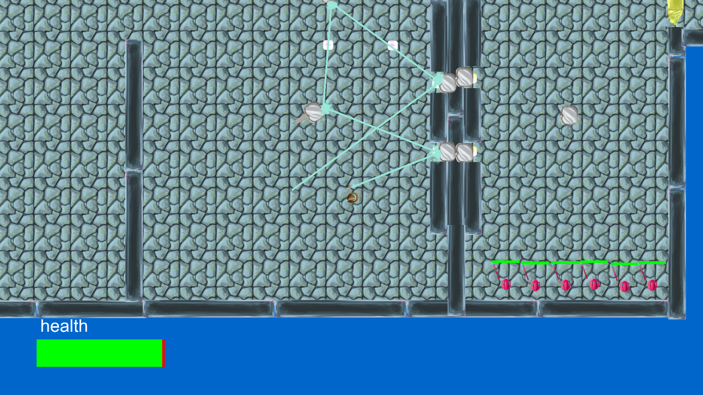

Staff of the Chaos Temple is game that I made as a intake assignment for the BUAS/NHTV. As intake assignment you had to program a game using c++/opengl.
The main subject of the game had to be about reflection. So I came up with this puzzle/action game where you have to fight enemies and light up crystals to open doors.
You have crystals in a room that can be activated using your staff that shoots a laser. If you activate all of the crystals at the same time with your staff a door will open that is connected to those crystals. You can use the mirrors to have the laser from your staff reflect allowing you to hit multiple crystals at the same time.
Levels can be created using the level creator that I made as well.
Date: 2018
Staff of the Chaos Temple

The game was made inside of a c++/OpenGL framework that I made. The framework is used for the creation of 2D games. It is a pretty basic framework and has no user interface whatsoever.
The framework deals with all the rendering and loading resources like files, shaders, images, text etc..
All that I have to do, to make a game inside of my framework is setup a Scene and put entities in that scene and the framework will know what to do with it. It will update the entities and render them if they are renderable.
The game also comes with a level creator. You can then place objects in a scene, setup puzzles by connecting crystals too doors, place enemies in the room and once you are done you can test run it and save it.
Github repository: https://github.com/TimBunk/tb2d